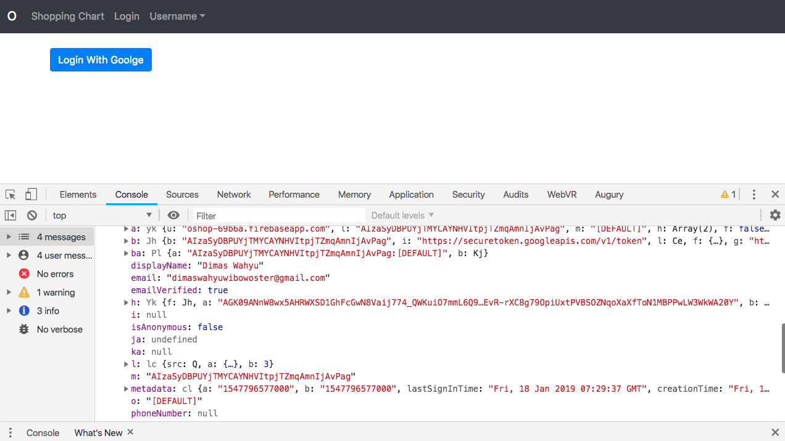

Kemampuan Akhir Yang Direncanakan
- Peserta mampu membuat proses logout
Percobaan 9 Logout
- buka halaman bs-navbar.component.html tambahkan function click pada logout, code sbb
<a class="dropdown-item" (click)="logout()"> Log Out</a>
- buka halaman bs-navbar.component.ts buat function click pada bs-navbar.component.ts , code sbb
import { Component } from '@angular/core';
import { AngularFireAuth} from 'angularfire2/auth';
@Component({
selector: 'bs-navbar',
templateUrl: './bs-navbar.component.html',
styleUrls: ['./bs-navbar.component.css']
})
export class BsNavbarComponent {
constructor(private afAuth:AngularFireAuth) { }
logout(){
this.afAuth.auth.signOut();
}
}
- jika kita logout maka tidak ada perubahan, untuk mengetahui perubahan pada saat di logout maka tambahkan code berikut pada constructor(private afAuth:AngularFireAuth)
afAuth.authState.subscribe(x=>console.log(x));
- sehingga hasil keseluruhan codenya sebagai berikut
import { Component } from '@angular/core';
import { AngularFireAuth} from 'angularfire2/auth';
@Component({
selector: 'bs-navbar',
templateUrl: './bs-navbar.component.html',
styleUrls: ['./bs-navbar.component.css']
})
export class BsNavbarComponent {
constructor(private afAuth:AngularFireAuth) {
afAuth.authState.subscribe(x=>console.log(x));
}
logout(){
this.afAuth.auth.signOut();
}
}
langkah berikutnya inspect element pilih console terlebih dahulu login with google
pada saat kondisi user masih belum logout seperti pada gambar berikut terdapat beberapa informasi

- pada saat kondisi user masih sudah logout seperti pada gambar berikut null